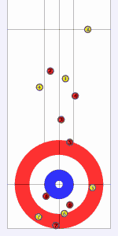

JCurl Curling Framework
Project Information
Berlios Project Page
Forum
Wiki
JavaDocs
Mailing Lists
Demo Applet
. Requires the Browser Plugin Java 1.4+ and comes with a download of ca. 150K. If you prefer to not use applets, try
JCurl Viewer via Java Web Start
or
JCurl Editor via Java Web Start
,
Todos
.
The project is hosted by
Webpage version $Id$